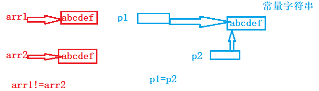

字符指针
在指针的类型中我们知道有一种指针类型为字符指针 char* ;
一般使用:
char ch = 'w';
char *pc = &ch;
*pc = 'w';
char arr[] = "abcdef";
char* pc = arr;
printf("%s\n", arr);//abcdef
printf("%s\n", pc);//abcdef
还有一种使用方式如下：
char* p= "abcdef";//"abcdef" 是一个常量字符串，存放的是a的地址
printf("%c\n", p);//a
printf("%s\n", p);//abcdef
*p='W';
//printf("%s\n", p);//err,准确的写法const char* p= "abcdef";
面试题
char arr1[] = "abcdef";
char arr2[] = "abcdef";
const char* p1 = "abcdef";//常量自字符串
const char* p2 = "abcdef";//常量自字符串里
//p1、p2指向的是一个同一个常量字符串，p1和p2指向同一个地址
//C/C++会把常量字符串存储到单独的一个内存区域，
//当几个指针。指向同一个字符串的时候，他们实际会指向同一块内存。
//但是用相同的常量字符串去初始化不同的数组的时候就会开辟出不同的内存块。
if (arr1 == arr2)
{
printf("hehe\n");
}
else
{
printf("haha\n");//打印
}
if (p1 == p2)
{
printf("hehe\n");//打印
}
else
{
printf("haha\n");
}

指针数组
指针数组的定义
//指针数组 是数组，用来存放指针的
int arr[10] = {0};//整形数组
char ch[5] = { 0 };//字符数组
int* parr[4];//存放整形指针的数组 - 指针数组
char* pch[5];//存放字符指针的数组 - 指针数组
指针数组的用途
//实际中不会这么用
int a = 10;
int b = 20;
int c = 30;
int d = 40;
int* arr[4] = {&a, &b, &c, &d};
int i = 0;
for (i = 0; i < 4; i++)
{
printf("%d ", *(arr[i]));//10 20 30 40
}

实际用途
int arr1[] = { 1, 2, 3, 4, 5 };
int arr2[] = { 2, 3, 4, 5, 6 };
int arr3[] = { 3, 4, 5, 6, 7 };
int* parr[] = { arr1, arr2, arr3 };
int i = 0;
for (i = 0; i < 3; i++)
{
int j = 0;
for (j = 0; j < 5; j++)
{
printf("%d ", *(parr[i] + j));
}
printf("\n");
}
数组指针
数组指针是指针？还是数组？
答案是：指针。
//int *p = NULL; //p是整形指针 - 指向整形的指针 - 可以存放整形的地址
//char* pc = NULL;//pc是字符指针 - 指向字符的指针 - 可以存放字符的地址
//数组指针 - 指向数组的指针 - 存放数组的地址
//int arr[10] = {0};
//arr- 首元素地址
//&arr[0] -首元素的地址
//&arr - 数组的地址
int arr[10] = { 1, 2, 3, 4, 5, 6, 7, 8, 9, 10 };
int (*p)[10] = &arr;//数组的地址要存起来
//上面的p就是数组指针
printf("%p\n", arr );
printf("%p\n", arr + 1);
printf("%p\n", &arr );
printf("%p\n", &arr+1);
&arr和arr，虽然值是一样的，但是意义应该不一样的。 实际上： &arr 表示的是数组的地址，而不是数组首元素的地址。 数组的地址+1，跳过整个数组的大小，所以 &arr+1 相对于 &arr 的差值是40.
&数组名VS数组名
数组指针的使用
char* arr[5];
char* (*pa)[5] = &arr;;//把数组arr的地址赋值给数组指针变量pa
//但是我们一般很少这样写代码
一个数组指针的使用：
//参数是数组的形式
void print1(int arr[3][5], int x, int y)
{
int i = 0;
int j = 0;
for (i = 0; i < x; i++)
{
for (j = 0; j < y; j++)
{
printf("%d ", arr[i][j]);
}
printf("\n");
}
}
//参数是指针的形式
void print2(int(*p)[5], int x, int y)
{
int i = 0;
for (i = 0; i < x; i++)
{
int j = 0;
for (j = 0; j < y; j++)
{
printf("%d ", p[i][j]);
//printf("%d ", *(p[i] + j));//
//printf("%d ", *(*(p + i) + j));
//printf("%d ", (*(p + i))[j]);//*(p + i)找到第i行j元素
}
printf("\n");
}
}
int main()
{
int arr[3][5] = { { 1, 2, 3, 4, 5 }, { 2, 3, 4, 5, 6 }, { 3, 4, 5, 6, 7 } };
//print1(arr, 3, 5);//arr - 数组名 - 数组名就是首元素地址
//但是二维数组的首元素是二维数组的第一行
//所以这里传递的arr，其实相当于第一行的地址，是一维数组的地址
//可以数组指针来接收
print_arr2(arr, 3, 5);
return 0;
}
arr[i] == *(arr+i) == *(p+i) == p[i]
int arr[10] = {1,2,3,4,5,6,7,8,9,10};
int i = 0;
int* p = arr;
for (i = 0; i < 10; i++)
{
printf("%d ", p[i]);//1 2 3 4 5 6 7 8 9 10
printf("%d ", *(p + i));//1 2 3 4 5 6 7 8 9 10
printf("%d ", *(arr + i));//1 2 3 4 5 6 7 8 9 10
printf("%d ", arr[i]);//arr[i] == *(arr+i) == *(p+i) == p[i]
}
//去掉数组名，就是存储的元素类型
int arr[5]; //arr 是一个5个元素的整形数组
int *parr1[10]; //parr1 是一个数组，数组有10个元素，每个元素的类型是int* ,parr1是存放指针的数组。指针数组
int (*parr2)[10]; //parr2 是一个指针，改指针指向了一个数组，数组有10个元素，每个元素的类型是int,parr2 是数组指针
int (*parr3[10])[5];//parr3 是一个数组，该数组有10个元素，每个元素是一个数组指针，该数组指针指向的数组有5个元素，每个元素是int
数组参数、指针参数
一维数组传参
#include <stdio.h>
void test(int arr[])//ok
{}
void test(int arr[10])//ok
{}
void test(int *arr)//ok
{}
void test2(int *arr[20])//ok
{}
void test2(int **arr)//ok
{}
int main()
{
int arr[10] = {0};
int *arr2[20] = {0};
test(arr);
test2(arr2);
}
二维数组传参
void test(int arr[3][5])//ok
{}
void test(int arr[][])//err
{}
void test(int arr[][5])//ok
{}
void test(int arr[3][])//err
{}
//总结：二维数组传参，函数形参的设计只能省略第一个[]的数字。
//因为对一个二维数组，可以不知道有多少行，但是必须知道一行多少元素。
//这样才方便运算。
void test(int *arr)//err
{}
void test(int* arr[5])//ok
{}
void test(int (*arr)[5])//ok
{}
void test(int **arr)//err
{}
int main()
{
int arr[3][5] = {0};
test(arr);//传入arr的第一行的地址，是个一维数组的地址值
}
一级指针传参
#include <stdio.h>
void print(int *p, int sz)
{
int i = 0;
for(i=0; i<sz; i++)
{
printf("%d\n", *(p+i));
}
}
int main()
{
int arr[10] = {1,2,3,4,5,6,7,8,9};
int *p = arr;
int sz = sizeof(arr)/sizeof(arr[0]);
//一级指针p，传给函数
print(p, sz);
return 0;
}
void test1(int *p)
{}
//test1函数能接收什么参数？
void test2(char* p)
{}
//test2函数能接收什么参数？
int main()
{
int a = 10;
int* p1 = &a;
test1(&a);//ok
test1(p1);//ok
char ch = 'w';
char* pc = &ch;
test2(&ch);//ok
test2(pc);//ok
return 0;
}
二级指针传参
#include <stdio.h>
void test(int** ptr)
{
printf("num = %d\n", **ptr);
}
int main()
{
int n = 10;
int*p = &n;
int **pp = &p;
test(pp);
test(&p);
int* arr[10];
test(arr);//指针数组也可以
return 0;
}
函数指针
&函数名 和 函数名 都是函数的地址
//数组指针 - 是指向数组的指针
//函数指针 - 是指向函数的指针 - 存放函数地址的一个指针
int Add(int x, int y)
{
int z = 0;
z = x + y;
return z;
}
int main()
{
int a = 10;
int b = 20;
//int arr[10] = { 0 };
//int (*p)[10] = &arr;
//arr;//&arr
//printf("%d\n", Add(a, b));
//&函数名 和 函数名 都是函数的地址
/*
printf("%p\n", &Add);
printf("%p\n", Add);
*/
int (*pa)(int, int) = Add;
printf("%d\n", (*pa)(2, 3));//5
return 0;
}
void Print(char*str)
{
printf("%s\n", str);
}
int main()
{
int a;
int * pa;
void (*p)(char*) = Print;
(*p)("hello");
p("hello");
p("hello world");
return 0;
}
//代码1
(*(void (*)())0)();//将0进行强制类型转换成【void (*)() 】-函数指针类型，该函数指针的类型是无参换返回类型是void,0就是一个函数的地址，然后*解引用，调用0地址处的该函数。
//代码2
void (* signal(int , void(*)(int)) )(int);//void(*)(int) 函数指针类型，该函数指针类型传入int返回void 。整个函数指针返回的是void(* )(int)-函数指针类型
// signal是一个函数声明
// signal函数的参数有2个，第一个是int。第二个是函数指针，该函数指针指向的函数的参数是int，返回类型是void
// signal函数的返回类型也是一个函数指针：该函数指针指向的函数的参数是int，返回类型是void
////简化
//typedef void(*pfun_t)(int);
//pfun_t signal(int, pfun_t);
//
//typedef unsigned int uint;
注 :推荐《C陷阱和缺陷》
int Add(int x, int y)
{
int z = 0;
z = x + y;
return z;
}
int main()
{
int a = 10;
int b = 20;
int(*pa)(int, int) = Add;
printf("%d\n", pa(2, 3));
printf("%d\n", Add(2, 3));
//printf("%d\n", *pa(2, 3));//err
printf("%d\n", (*pa)(2, 3));
printf("%d\n", (**pa)(2, 3));
return 0;
}
函数指针数组
int Add(int x, int y)
{
return x + y;
}
int Sub(int x, int y)
{
return x - y;
}
int Mul(int x, int y)
{
return x * y;
}
int Div(int x, int y)
{
return x / y;
}
int main()
{
//指针数组
//int* arr[5];
//需要一个数组，这个数组可以存放4个函数的地址 - 函数指针的数组
int (*pa)(int, int) = Add;//Sub/Mul/Div
int(*parr[4])(int, int) = {Add, Sub, Mul, Div};//函数指针的数组
int i = 0;
for (i = 0; i < 4; i++)
{
printf("%d\n", parr[i](2, 3));//5 -1 6 0
}
return 0;
}
函数指针定义
int (*parr1[10])();
int *parr2[10]();//err
int (*)() parr3[10];//err
练习
char* my_strcpy(char* dest, const char* src);
//1.写一个函数指针 pf，能够指向my_strcpy
char* (*pf)(char*, const char*);
//2. 写一个函数指针数组 pfArr，能够存放4个my_strcpy函数的地址
char* (*pfArr[4])(char*, const char*);
函数指针数组的用途：转移表
例子：（计算器）
#include <stdio.h>
//计算器
void menu()
{
printf("**************************\n");
printf("** 1. add 2. sub **\n");
printf("** 3. mul 4. div **\n");
printf("** 5. xor 0. exit**\n");
printf("**************************\n");
}
int Add(int x, int y)
{
return x + y;
}
int Sub(int x, int y)
{
return x - y;
}
int Mul(int x, int y)
{
return x * y;
}
int Div(int x, int y)
{
return x / y;
}
int Xor(int x, int y)
{
return x ^ y;
}
//回调函数
void Calc(int (*pf)(int, int))
{
int x = 0;
int y = 0;
printf("请输入两个操作数:>");
scanf("%d%d", &x, &y);
printf("%d\n", pf(x, y));
}
int main()
{
int input = 0;
do
{
menu();
printf("请选择:>");
scanf("%d", &input);
switch (input)
{
case 1:
Calc(Add);
break;
case 2:
Calc(Sub);
break;
case 3:
Calc(Mul);
break;
case 4:
Calc(Div);
break;
case 0:
printf("退出\n");
break;
default:
printf("选择错误\n");
break;
}
} while (input);
return 0;
}
使用函数指针数组的实现main：
int main()
{
int input = 0;
int x = 0;
int y = 0;
//pfArr 是一个函数指针数组 - 转移表
int(*pfArr[])(int, int) = {0, Add, Sub, Mul, Div, Xor};
do
{
menu();
printf("请选择:>");
scanf("%d", &input);
if (input >= 1 && input <= 5)
{
printf("请输入两个操作数:>");
scanf("%d%d", &x, &y);
int ret = pfArr[input](x, y);
printf("%d\n", ret);
}
else if (input == 0)
{
printf("退出\n");
}
else
{
printf("选择错误\n");
}
} while (input);
}
指向函数指针数组的指针
指向函数指针数组的指针是一个指针，指针指向一个数组，数组的元素都是函数指针。
int arr[10] = { 0 };
int (*p)[10] = &arr;//取出数组的地址
int(*pf)(int, int);//函数指针
int (*pfArr[4])(int, int);//pfArr是一个数组-函数指针的数组
//ppfArr是一个指向[函数指针数组]的指针
int(*(*ppfArr)[4])(int, int) = &pfArr;
//
//ppfArr 是一个数组指针，指针指向的数组有4个元素
//指向的数组的每个元素的类型是一个函数指针 int(*)(int, int)
//
回调函数
回调函数就是一个通过函数指针调用的函数。如果你把函数的指针（地址）作为参数传递给另一个函数，当这个指针被用来调用其所指向的函数时，我们就说这是回调函数。回调函数不是由该函数的实现方直接调用，而是在特定的事件或条件发生时由另外的一方调用的，用于对该事件或条件进行响应。
void print(char *str) //回调函数
{
printf("hehe:%s", str);
}
void test( void (*p)(char*) )
{
printf("test\n");
p("hello");
}
int main()
{
test(print);
//test
//hehe : hello
return 0;
}
使用场景
之前写的BubbleSort：只能排序整形数组
void bubble_sort(int arr[], int sz)
{
int i = 0;
//趟数
for (i = 0; i < sz-1; i++)
{
//一趟冒泡排序
int j = 0;
for (j = 0; j <sz-1-i; j++)//9 8 7 6 5 4 3 2 1 多少对
{
if (arr[j] > arr[j + 1])
{
int tmp = arr[j];
arr[j] = arr[j + 1];
arr[j + 1] = tmp;
}
}
}
}
void* 类型的指针 可以接受任意类型的地址
int a = 10;
//int* pa = &a;//
//char* pc = &a;
//char ch = 'w';
void* p = &a;
//*p = 0;
//p++;
//p = &ch;
//void* 类型的指针 可以接收任意类型的地址
//void* 类型的指针 不能进行解引用操作
//void* 类型的指针 不能进行+-整数的操作
qsort函数
qsort函数实现冒泡排序
#include <stdio.h>
#include <stdlib.h>
#include <string.h>
int cmp_int(const void *e1, const void *e2)
{
//比较两个整形值的
return *(int *)e1 - *(int *)e2;
}
void test1()
{
int arr[10] = {9, 8, 7, 6, 5, 4, 3, 2, 1, 0};
int sz = sizeof(arr) / sizeof(arr[0]);
qsort(arr, sz, sizeof(arr[0]), cmp_int);
int i = 0;
for (i = 0; i < sz; i++)
{
printf("%d ", arr[i]);
}
}
//比较浮点型
int cmp_float(const void *e1, const void *e2)
{
/*if (*(float*)e1 == *(float*)e2)
return 0;
else if (*(float*)e1 > *(float*)e2)
return 1;
else
return -1;*/
return ((int)(*(float *)e1 - *(float *)e2));
}
void test2()
{
float f[] = {9.0, 8.0, 7.0, 6.0, 5.0, 4.0};
int sz = sizeof(f) / sizeof(f[0]);
qsort(f, sz, sizeof(f[0]), cmp_float);
int j = 0;
for (j = 0; j < sz; j++)
{
printf("%f ", f[j]);
}
}
//比较结构体类型
struct Stu
{
char name[20];
int age;
};
int cmp_stu_by_age(const void *e1, const void *e2)
{
return ((struct Stu *)e1)->age - ((struct Stu *)e2)->age;
}
int cmp_stu_by_name(const void *e1, const void *e2)
{
//比较名字就是比较字符串
//字符串比较不能直接用><=来比较，应该用strcmp函数<string.h>
return strcmp(((struct Stu *)e1)->name, ((struct Stu *)e2)->name);
}
void test3()
{
struct Stu s[3] = {{"zhangsan", 20}, {"lisi", 30}, {"wangwu", 10}};
int sz = sizeof(s) / sizeof(s[0]);
qsort(s, sz, sizeof(s[0]), cmp_stu_by_name);
//第一个参数：待排序数组的收元素地址
//第二个参数：待排序数组的元素个数
//第三个参数：待排序数组的每个元素的大小-单位是字节
//第四个参数：是函数指针，比较两个元素的所用函数的地址-这个函数使用者自己实现
// 函数指针的两个参数是：待比较的两个元素的地址
}
//实现bubble_sort函数的程序员，他是否知道未来排序的数据类型-不知道
//那程序员也不知道，待比较的两个元素的类型
void Swap(char *buf1, char *buf2, int width)
{
int i = 0;
for (i = 0; i < width; i++)
{
char tmp = *buf1;
*buf1 = *buf2;
*buf2 = tmp;
buf1++; //指向下一个字符
buf2++;
}
}
//因为首元素类型不同，v所以使用void指针
//sz要排序元素个数
//width每个元素的字节数
//两个元素比较的方法不一样，把比较函数的地址传进来,e1,e2要比较的元素
void bubble_sort(void *base, int sz, int width, int (*cmp)(void *e1, void *e2))
{
int i = 0;
//趟数
for (i = 0; i < sz - 1; i++)
{
//每一趟比较的对数
int j = 0;
for (j = 0; j < sz - 1 - i; j++)
{
//两个元素的比较
if (cmp((char *)base + j * width, (char *)base + (j + 1) * width) > 0)
{
//交换,一对一对字符交换
Swap((char *)base + j * width, (char *)base + (j + 1) * width, width);
}
}
}
}
void test4()
{
int arr[10] = {9, 8, 7, 6, 5, 4, 3, 2, 1, 0};
int sz = sizeof(arr) / sizeof(arr[0]);
//使用bubble_sort的程序员一定知道自己排序的是什么数据
//就应该知道如何比较待排序数组中的元素
bubble_sort(arr, sz, sizeof(arr[0]), cmp_int);
}
void test5()
{
struct Stu s[3] = {{"zhangsan", 20}, {"lisi", 30}, {"wangwu", 10}};
int sz = sizeof(s) / sizeof(s[0]);
//bubble_sort(s, sz, sizeof(s[0]), cmp_stu_by_age);
bubble_sort(s, sz, sizeof(s[0]), cmp_stu_by_name);
}
int main()
{
//test1();
//test2();
//test3();
//test4();
test5();
return 0;
}
指针和数组笔试题解析
数组名是首元素的地址
- sizeof(数组名)，这里的数组名表示整个数组，计算的是整个数组的大小。
- &数组名，这里的数组名表示整个数组，取出的是整个数组的地址。
- 除此之外所有的数组名都表示首元素的地址。
一维数组
整形数组
int a[] = {1, 2, 3, 4}; //4*4 = 16
printf("%d\n", sizeof(a)); //sizeof(数组名)-计算的是数组总大小-单位是字节- 16
printf("%d\n", sizeof(a + 0)); //4/8 - 数组名这里表示收元素的值，a+0 还是首元素地址，地址的大小就是4/8个字节
printf("%d\n", sizeof(*a)); //4 - 数组名表示首元素地址，*a就是首元素，sizeof(*a)就是4
printf("%d\n", sizeof(a + 1)); //4/8 - 数组名这里表示收元素的值，a+1 第2个元素的地址，地址的大小就是4/8个字节
printf("%d\n", sizeof(a[1])); //4 - 第2个元素的大小
printf("%d\n", sizeof(&a)); //4/8 &a取出的是数组的地址，但是数组的地址那也是地址，地址的大小就是4/8个字节
printf("%d\n", sizeof(*&a)); //16 - &a数组的地址，数组的地址解引用访问的数组，sizeof计算的就是数组的大小单位是字节
printf("%d\n", sizeof(&a + 1)); //4/8 &a是数组的地址，&a+1虽然地址跳过整个数组，但还是地址，所以是4/8个字节
printf("%d\n", sizeof(&a[0])); //4/8 &a[0]是第一个元素的地址
printf("%d\n", sizeof(&a[0] + 1)); //4/8 &a[0]+1 是第二个元素的地址
字符数组1
char arr[] = {'a', 'b', 'c', 'd', 'e', 'f'};
printf("%d\n", strlen(arr)); //随机值
printf("%d\n", strlen(arr + 0)); //随机值
//printf("%d\n", strlen(*arr));//err
//printf("%d\n", strlen(arr[1]));//err
printf("%d\n", strlen(&arr));//随机值
printf("%d\n", strlen(&arr + 1));//随机值-6,与前一个随机值差6
printf("%d\n", strlen(&arr[0] + 1));//随机值-1，与前一个随机值差1
printf("%d\n", sizeof(arr)); //sizeof计算机的是数组大小，6*1 = 6字节
printf("%d\n", sizeof(arr + 0)); //4/8 arr是首元素的地址，arr+0还是首元素的地址 地址的大小是4/8字节
printf("%d\n", sizeof(*arr)); //1 arr是首元素的地址，*arr就是首元素，首元素是字符大小是一个字节
printf("%d\n", sizeof(arr[1])); //1
printf("%d\n", sizeof(&arr)); //4/8 &arr 虽然是数组的地址，但还是地址，地址大小是4/8个字节
printf("%d\n", sizeof(&arr + 1)); //4/8 &arr+1 是跳过整个数组后的地址，地址大小是4/8个字节
printf("%d\n", sizeof(&arr[0] + 1)); //4/8 第二个元素的地址
字符数组2
char arr[] = "abcdef";
printf("%d\n", strlen(arr)); //6
printf("%d\n", strlen(arr + 0)); //6
//printf("%d\n", strlen(*arr));//err
//printf("%d\n", strlen(arr[1]));//err
printf("%d\n", strlen(&arr)); //6 &arr - 数组的地址-数组指针 char(*p)[7] = &arr;
printf("%d\n", strlen(&arr + 1)); //随机值
printf("%d\n", strlen(&arr[0] + 1)); //5
printf("%d\n", sizeof(arr)); //sizeof(arr)计算的数组的大小，单位是字节：7
printf("%d\n", sizeof(arr + 0)); //4/8 计算的是地址的大小-arr + 0是首元素的地址
printf("%d\n", sizeof(*arr)); //1 *arr 是首元素，sizeof(*arr)计算首元素的大小
printf("%d\n", sizeof(arr[1])); //1 arr[1]是第二个元素，sizeof(arr[1])计算的是第二个元素的大小
printf("%d\n", sizeof(&arr)); //4/8 &arr虽然是数组的地址，但也是地址，所以是4/8个字节
printf("%d\n", sizeof(&arr + 1)); //4/8 &arr+1是跳过整个数组后的地址，但也是地址
printf("%d\n", sizeof(&arr[0] + 1)); //4/8 &arr[0]+1 第二个元素的地址
字符数组3
char *p = "abcdef"; //把常量字符串abcdef的a的地址放到p
printf("%d\n", strlen(p)); //6
printf("%d\n", strlen(p + 1)); //5
//printf("%d\n", strlen(*p));//err
//printf("%d\n", strlen(p[0]));//err
printf("%d\n", strlen(&p)); //随机值 小端存储
printf("%d\n", strlen(&p + 1)); //随机值
printf("%d\n", strlen(&p[0] + 1)); //5
printf("%d\n", sizeof(p)); //4/8 - 计算指针变量p的大小
printf("%d\n", sizeof(p + 1)); //4/8 - p+1 得到的是字符b的地址
printf("%d\n", sizeof(*p)); //1 *p 就是字符串的第一个字符 - 'a'
printf("%d\n", sizeof(p[0])); //1 int arr[10]; arr[0] == *(arr+0) p[0] == *(p+0) == 'a'
printf("%d\n", sizeof(&p)); //4/8 地址 a的地址
printf("%d\n", sizeof(&p + 1)); //4/8 地址 b的地址
printf("%d\n", sizeof(&p[0] + 1)); //4/8 地址 b的地址
&p 和 &p+1 【图中地址为捏造，举例】
二维数组
//二维数组
int a[3][4] = {0};
//printf("%p\n", &a[0][0]); //00000009A9B4F6E8 第一行第一个元素的地址
//printf("%p\n", a[0] + 1); //00000009A9B4F6EC 第一行第二个元素的地址 64位
//printf("%p\n", a + 1); //00000009A9B4F6F8 第二行的地址
//printf("%p\n", &a[0] + 1); //00000009A9B4F6F8 第二行的地址
printf("%d\n", sizeof(a)); //48
printf("%d\n", sizeof(a[0][0])); //4
printf("%d\n", sizeof(a[0])); //16 a[0]相当于第一行做为一维数组的数组名，
//sizeof(arr[0])把数组名单独放在sizeof()内，计算的是第一行的大小
printf("%d\n", sizeof(a[0] + 1)); //4/8 - a[0]是第一行的数组名，数组名此时是首元素的地址，a[0]其实就是第一行第一个元素的地址
//所以 a[0]+1 就是第一行第二个元素的地址- 地址大小是4/8个字节
printf("%d\n", sizeof(*(a[0] + 1))); //4- *(a[0] + 1)) 是第一行第二个元素，大小是4个字节
printf("%d\n", sizeof(a + 1)); //4/8 //a是二维数组的数组名，没有sizeof(a)，也没有&(a),所以a是首元素地址
//而把二维数组看成一维数组时，二维数组的首元素是他的第一行，a就是第一行（首元素）的地址
//a+1就是第二行的地址
printf("%d\n", sizeof(*(a + 1))); //16, sizeof(a[1]) 计算第二行的大小,单位是字节
printf("%d\n", sizeof(&a[0] + 1)); //4/8, 第二行的地址
printf("%d\n", sizeof(*(&a[0] + 1))); //16 计算第二行的大小，单位是字节
printf("%d\n", sizeof(*a)); //16 a是首元素地址-第一行的地址，*a就是第一行，sizeof(*a)就是计算第一行的大小
printf("%d\n", sizeof(a[3])); //16 sizeof()括号里不参与真实运算，sizeof(a[3])等价sizeof(a[0])
指针相关
指针加减整数的运算1
int a[5] = { 1, 2, 3, 4, 5 };
int *ptr = (int *)(&a + 1);
printf( "%d,%d", *(a + 1), *(ptr - 1)); //2 5
指针加减整数的运算2
//结构体的大小是20个字节
struct Test
{
int Num;
char *pcName;
short sDate;
char cha[2];
short sBa[4];
} * p;
//假设p 的值为0x100000。 如下表表达式的值分别为多少？
int main()
{
p = (struct Test *)0x100000;
printf("%p\n", p + 0x1); //00100014 32位 0x100000+20
printf("%p\n", (unsigned long)p + 0x1); //00100001 32位 p转换成10进制=1,048,576+1
printf("%p\n", (unsigned int *)p + 0x1); //00100004 32位 (unsigned int *)无符号整型指针 就是指针+1(int指针为4/8)
return 0;
}
指针加减整数的运算3
int a[4] = { 1, 2, 3, 4 };
int *ptr1 = (int *)(&a + 1);
int *ptr2 = (int *)((int)a + 1);//a是首元素地址，强制转换成整数+1.在转换成地址，相当于向后偏移了一个字节
printf("%x,%x", ptr1[-1], *ptr2);//4，2000000
指针加减整数的运算4
int a[3][2] = { (0, 1), (2, 3), (4, 5) };//（，）逗号表达式，存储逗号后内容
int *p;
p = a[0];
printf("%d\n", p[0]);//1

指针加减整数的运算5
int a[5][5];
int(*p)[4];
p = a;//int (*)[4] ----- int (*) [5] 【会有警告】
printf("%p,%d\n", &p[4][2] - &a[4][2], &p[4][2] - &a[4][2]);//FFFFFFFC,-4
指针加减整数的运算6
int aa[2][5] = {1, 2, 3, 4, 5, 6, 7, 8, 9, 10};
int *ptr1 = (int *)(&aa + 1);
int *ptr2 = (int *)(*(aa + 1)); // aa[1]
printf("%d,%d\n", *(ptr1 - 1), *(ptr2 - 1)); //10 5
int arr[10] = {1,2,3,4,5};
int* p = arr;
//*(p + 2) == p[2] ==> *(arr+2) == arr[2]
arr[2]; // ==> *(arr+2)
指针加减整数的运算7
char* a[] = { "work", "at", "alibaba" };
char**pa = a;
pa++;
printf("%s\n", *pa);//
指针加减整数的运算8
char *c[] = {"ENTER", "NEW", "POINT", "FIRST"};
char **cp[] = {c + 3, c + 2, c + 1, c};
char ***cpp = cp;
printf("%s\n", **++cpp); //POINT
printf("%s\n", *--*++cpp + 3); //ER
printf("%s\n", *cpp[-2] + 3); //ST
printf("%s\n", cpp[-1][-1] + 1); //EW
旋转字符串
实现一个函数，可以左旋字符串中的k个字符。
例如：
ABCD左旋一个字符得到BCDA
ABCD左旋两个字符得到CDAB
暴力求解法
#include <string.h> #include <assert.h> void left_move(char* arr, int k) { assert(arr != NULL); int i = 0; int len = strlen(arr); for (i = 0; i < k; i++) { //左旋转一个字符 //1 char tmp = *arr; //2 int j = 0; for (j = 0; j < len-1; j++) { *(arr + j) = *(arr + j + 1); } //3 *(arr + len - 1) = tmp; } } int main() { char arr[] = "abcdef"; left_move(arr, 2); printf("%s\n", arr); return 0; }三步翻转法
abcdef ab cdef 左边逆序，右边逆序 bafedc 整体逆序 cdefab#include <string.h> #include <assert.h> //逆序字符串的函数 void reverse(char* left, char* right) { assert(left != NULL); assert(right != NULL); while (left < right) { char tmp = *left; *left = *right; *right = tmp; left++; right--; } } void left_move(char* arr, int k) { assert(arr); int len = strlen(arr); assert(k <= len); //不能超过字符长度 reverse(arr, arr + k - 1);//逆序左边 reverse(arr + k, arr + len - 1);//逆序右边 reverse(arr, arr + len - 1);//逆序整体 } int main() { char arr[] = "abcdef"; left_move(arr, 2); printf("%s\n", arr); return 0; }
字符串旋转结果
写一个函数，判断一个字符串是否为另一个字符串旋转之后的字符串。
例如给定 s1=AABCD和s2=BCDAA,返回1
给定s1=abcd和s2=ACBD,返回0
AABCD左旋一个字符得到ABCDA
AABCD左旋两个字符得到BCDAA
AABCD右旋一个字符得到DAABC
穷举法
int is_left_move(char* str1, char* str2) { int len = strlen(str1); int i = 0; for (i = 0; i < len; i++) { left_move(str1, 1);//调用上题代码，每次旋转s1都会变化 int ret = strcmp(str1, str2); if (ret == 0) { return 1; } } return 0; } int main() { char arr1[] = "abcdef"; char arr2[] = "cdefab"; int ret = is_left_move(arr1, arr2); if (ret == 1) { printf("Yes\n"); } else { printf("No\n"); } return 0; }追加法
abcdef cdefab abcdefabcdef#include <string.h> #include <assert.h> int is_left_move(char* str1, char* str2) { int len1 = strlen(str1); int len2 = strlen(str2); if (len1 != len2) return 0; //1. 在str1字符串中追加一个str1字符串 //strcat(str1, str1);//err 自己给自己追加不能使用该方法\0不会停下来 strncat(str1, str1, len1);//abcdefabcdef //2. 判断str2指向的字符串是否是str1指向的字符串的子串 //strstr-找子串的 char * ret = strstr(str1, str2); if (ret == NULL) { return 0; } else { return 1; } } int main() { char arr1[30] = "abcdef"; char arr2[] = "cdef"; int ret = is_left_move(arr1, arr2); if (ret == 1) { printf("Yes\n"); } else { printf("No\n"); } return 0; }注： strcat 示例
#include <string.h> #include <stdio.h> int main() { char arr1[30] = "abc"; char arr2[] = "def"; strcat(arr1, arr2); printf("%s\n", arr1); //abcdef return 0; }
杨氏矩阵
有一个数字矩阵，矩阵的每行从左到右是递增的，矩阵从上到下是递增的，
请编写程序在这样的矩阵中查找某个数字是否存在。
要求：时间复杂度小于O(N);
1 2 3
4 5 6
7 8 9
1 2 3
2 3 4
3 4 5
//int FindNum(int arr[3][3], int k, int row, int col)
//{
// int x = 0;
// int y = col - 1;
//
// while (x<=row-1 && y>=0)
// {
// if (arr[x][y] > k)
// {
// y--;
// }
// else if (arr[x][y] < k)
// {
// x++;
// }
// else
// {
// return 1;
// }
// }
// //找不到
// return 0;
//}
//
int FindNum(int arr[3][3], int k, int *px, int*py)
{
int x = 0;
int y = *py - 1;
while (x <= *px - 1 && y >= 0)
{
if (arr[x][y] > k)
{
y--;
}
else if (arr[x][y] < k)
{
x++;
}
else
{
*px = x;
*py = y;
return 1;
}
}
//找不到
return 0;
}
int main()
{
int arr[3][3] = { { 1, 2, 3 }, { 4, 5, 6 }, {7,8,9} };
int k = 7;
int x = 3;
int y = 3;
//返回型参数
int ret = FindNum(arr, k, &x, &y);
if (ret == 1)
{
printf("找到了\n");
printf("下标是：%d %d\n", x, y);
}
else
{
printf("找不到\n");
}
return 0;
}